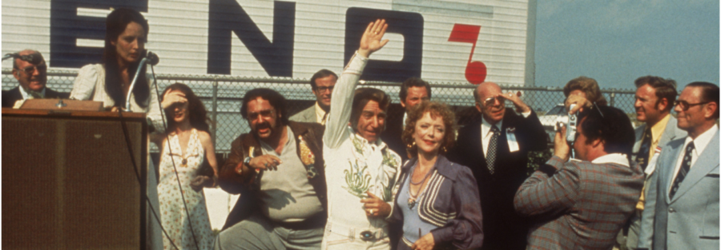

NASHVILLE (1975) in 35mm with Professor Heather Hendershot
“If you had to pick one film to represent 1975 America,” writes celebrated historian Heather Hendershot, “you could not do better than NASHVILLE.” A freewheeling musical satire about the collapse of American idealism, Robert Altman’s NASHVILLE was perfectly timed for an era of oil shocks, future shock, sticker shock, and the shocked conscience of the Watergate scandal. But, paradoxically, it also represents the best that American cinema had to offer, with boldly stylized screenwriting, performances, cinematography, and editing that improbably coalesce into a signature film from a thrilling and turbulent decade for movies.
In her forthcoming BFI Classics monograph on the film, Hendershot–the Cardiss Collins Professor of Communication Studies and Journalism at Northwestern–takes on the formidable task of breaking down Altman’s masterwork, examining the film’s often-overlooked commentary on gendered exploitation and drawing attention to the “guarded hopefulness” that tempers its cynical portrayal of political spectacle.
Block Cinema welcomes Heather Hendershot for an introduction to this special 35mm presentation of NASHVILLE, offered in celebration of the October publication of her new book: NASHVILLE (BFI Film Classics).
About the speaker:
Empty heading
Heather Hendershot is Professor in Communication Studies at Northwestern University, USA. Her books include When the News Broke: Chicago 1968 and the Polarizing of America (2022) and What’s Fair on the Air? Cold War Right-Wing Broadcasting and the Public Interest (2011). Her research interests include American film, television, and political culture, focusing on the 1960s-70s. Her essays have appeared in the Nation, the Washington Post, The Conversation, and Politico.